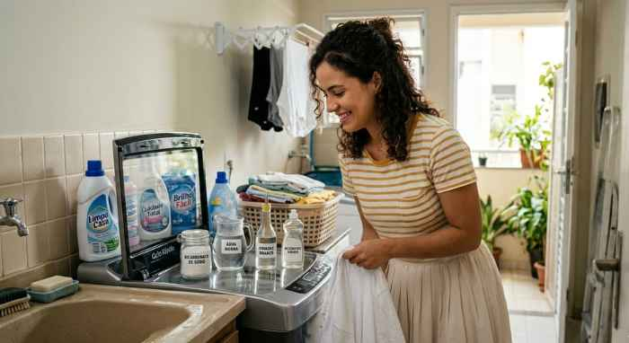
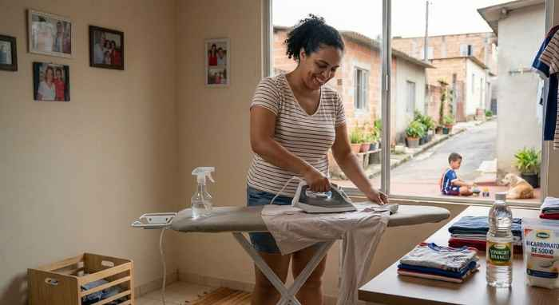
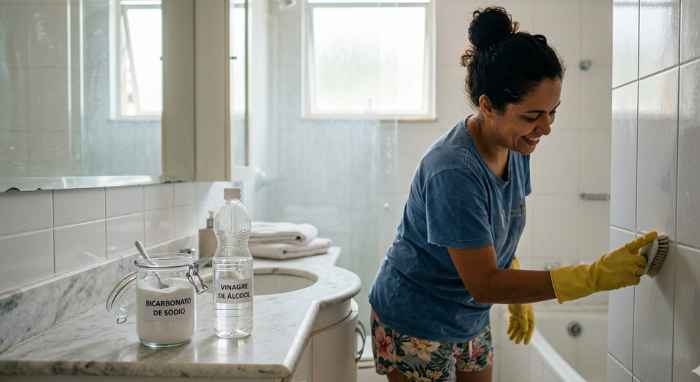
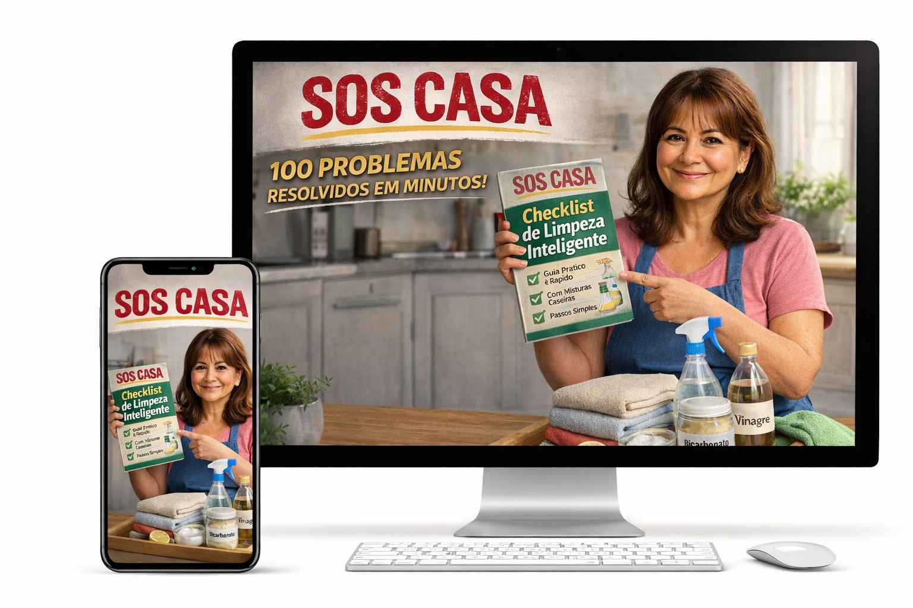
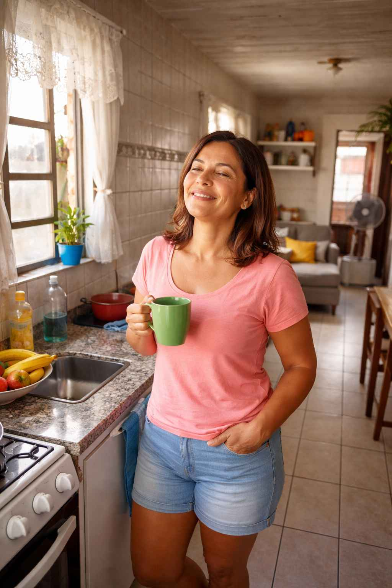

ATENÇÃO: Cansada de se sentir sobrecarregada com os problemas da sua casa?
Xixi no colchão, cheiro de mofo, sujeira que parece impossível… pequenos problemas que roubam sua paz todos os dias.
Existe um jeito simples de resolver 100 problemas domésticos em minutos usando apenas coisas que você já tem em casa.
SIM, EU QUERO RESOLVER MINHA CASA AGORAA HISTÓRIA DE ROMILDA
Acordando para o caos
Romilda Santos, 52 anos, acorda antes do sol. Dois netos pequenos ainda dormem na sua cama. Ela se aproxima e percebe... o colchão está molhado mais uma vez.
Ela suspira. Entre roupas espalhadas, brinquedos e pratos sujos, ela sabe que vai começar outro dia de corrida.
O trabalho com vendas da Avon e Natura não espera. Clientes, entregas, pedidos... e a casa exigindo atenção.
-- Romilda Santos

Cada pequeno problema parecia uma crise
O xixi no colchão que deixava cheiro mesmo depois de lavar
O ventilador cheio de poeira que ninguém sabia limpar direito
O banheiro engordurado depois do café da manhã dos netos
A cozinha acumulando gordura difícil de remover
Romilda se sentia exausta, sem tempo, sem orientação. Não adiantava pesquisar, nem tentar métodos complicados. Ela precisava de algo simples e direto.
-- Romilda Santos
Mais de 3.000 casas já usaram o método S.O.S Casa
Veja o que outras pessoas estão dizendo

Campinas - SP
Eu não acreditava muito, mas resolvi testar. Consegui tirar manchas antigas do sofá que estavam há anos. Fiquei impressionada.

Curitiba - PR
Aqui em casa sempre sofremos com gordura na cozinha. Segui as dicas e deu muito certo. Simples e prático.

Belo Horizonte - MG
O guia é bem direto. Gostei porque explica passo a passo. Já usei em várias partes da casa.
Como isso acontece na vida real
Problemas simples da casa que parecem pequenos, mas se acumulam todos os dias. Foi exatamente isso que levou Romilda a procurar uma solução.



Pequenos problemas domésticos acontecem todos os dias. Mas quando você tem um método simples, eles deixam de ser um peso na sua rotina.
✨ A VIRADA
Descobrindo a solução
Um dia, quase sem esperança, Romilda encontrou o nosso método S.O.S CASA.
Ela pensou: "Será que vai ser fácil de entender? Será que vou conseguir aplicar sem perder tempo?"
E foi exatamente isso que aconteceu. O método era pronto, direto ao ponto, com passo a passo simples, sem complicações ou termos difíceis.
-- Romilda Santos
Transformação completa
Hoje, Romilda acorda tranquila
Os netos ainda fazem bagunça, mas ela sabe exatamente o que fazer. O colchão limpa rápido, o mofo some, a cozinha fica brilhando sem esforço.
O S.O.S CASA mudou sua rotina. Parecia impossível antes… mas agora cada problema tem uma solução simples.
“Hoje eu não fico mais perdida. Eu olho o problema, abro o guia e resolvo.”
Depois de aplicar o S.O.S CASA, você vai sentir:
Tranquilidade e controle sobre sua casa
Economia de tempo e dinheiro
Rotina organizada sem correria
Menos estresse e frustração
Mais tempo para você e sua família
Casa limpa sem esforço exagerado
Não é só limpeza. É paz e liberdade na sua rotina diária.

Aplicando o método: veja 30 dos 100 problemas resolvidos
Amostra do que você recebe. São 100 soluções no total!
Xixi no colchão? Resolvido em minutos com coisas que ela já tinha em casa.
Cheiro de mofo na geladeira? Eliminado sem produtos caros.
Ventilador sujo? Limpo sem desmontar nada.
Gordura pesada na cozinha? Removida rapidamente, sem esforço.
Ralo entupido? Desentupido sem chamar encanador.
Mancha de café no tecido? Removida sem danificar o pano.
Azulejo encardido? Limpo com mistura caseira simples.
Panela queimada? Restaurada sem raspar e sem esforço.
Cheiro ruim na lixeira? Eliminado com ingrediente de cozinha.
Ferrugem em utensílio? Removida com produto natural.
Vidro manchado de gordura? Brilhando com receita caseira.
Piso encardido? Limpo sem precisar ficar de joelhos.
Roupa amarelada? Branqueada sem cloro e sem química pesada.
Cortina mofada? Limpa sem precisar desmontar.
Sofá com mancha? Limpo sem chamar profissional.
Cheiro de cigarro nos móveis? Eliminado com truque simples.
Geladeira com mau cheiro? Resolvido em 5 minutos.
Rejunte escuro? Clareado com ingrediente de padaria.
Tapete com odor forte? Desodorizado sem lavar.
Ferrugem na roupa? Removida sem danificar o tecido.
Pia de inox sem brilho? Brilhando como nova.
Parede com marcas de gordura? Limpa sem precisar pintar.
Box do banheiro embaçado? Transparente com receita caseira.
Colchão com ácaro? Higienizado com mistura simples.
Micro-ondas com crosta? Limpo sem esfregar nada.
Vaso sanitário com mancha? Limpo com ingrediente de cozinha.
Guarda-roupa com cheiro de mofo? Resolvido definitivamente.
Tênis branco encardido? Limpo sem máquina de lavar.
Lençol com manchas antigas? Restaurado com mistura caseira.
Torneira com marca d'água? Brilhando como nova em segundos.
Cada solução é passo a passo, direto ao ponto, sem precisar estudar, pesquisar ou adivinhar.
“Era tão simples que eu não precisava nem pensar. Eu apenas seguia os passos e funcionava.”
— Romilda Santos, emocionada
Depois de aplicar o S.O.S CASA, você vai sentir:
Tranquilidade dentro da sua casa
Nada de olhar para a bagunça e sentir desespero. Você vai saber exatamente o que fazer em cada situação.
Economia real de dinheiro
Pare de gastar com produtos caros ou soluções que não funcionam. Use coisas simples que você já tem em casa.
Rotina organizada mesmo com crianças ou trabalho
Métodos rápidos que resolvem problemas em minutos, sem perder horas limpando.
Mais energia e menos frustração
Sem aquela sensação de que a casa está sempre fora de controle.
Mais tempo para você e sua família
Menos tempo resolvendo problemas da casa e mais tempo vivendo momentos bons.
Casa limpa e organizada sem sofrimento
Soluções práticas que qualquer pessoa consegue aplicar, mesmo sem experiência.
Não é só limpeza. É paz, controle e liberdade na sua rotina diária.

Imagine chegar em casa e não sentir medo do que vai encontrar
Nada de xixi no colchão que demora horas para limpar
Nada de cheiro de mofo insistente
Nada de sujeira que exige horas de esforço
Você aplica o passo a passo e tudo se resolve em minutos.
-- Romilda Santos
O QUE VOCÊ RECEBE
Tudo que você precisa para transformar sua casa
100 soluções domésticas
Problemas comuns resolvidos com passo a passo simples que qualquer pessoa consegue aplicar.
Eliminar odores difíceis
Aprenda como remover cheiro de mofo, xixi, gordura e outros odores persistentes da sua casa.
Métodos para manchas
Técnicas caseiras para eliminar manchas de colchão, sofá, roupa e azulejos.
Limpeza rápida
Métodos pensados para quem trabalha e precisa resolver tudo em poucos minutos.
Checklist semanal
Uma lista prática para manter sua casa sempre organizada sem esforço.
Cronograma 15 min por dia
Organize sua rotina de limpeza gastando apenas alguns minutos por dia.
Misturas caseiras poderosas
Receitas simples com ingredientes baratos que substituem produtos caros.
Método Plug & Play
Abra o guia, siga o passo a passo e resolva o problema imediatamente.
Talvez você esteja pensando...
"Será que é para mim? Será que eu consigo aplicar?"
A resposta é SIM. O S.O.S CASA foi criado para pessoas comuns. Não importa se você é dona de casa, trabalha fora ou cuida da família o dia todo. Se você consegue seguir uma receita simples, consegue aplicar o método.
E se não funcionar?
Você tem 7 dias de garantia incondicional. Se não gostar, devolvemos 100% do seu dinheiro.
Preciso comprar produtos caros?
Não. A maioria das soluções usa ingredientes simples que você já tem em casa.
É difícil aplicar?
Não. Cada solução tem poucos passos simples e rápidos.
Como recebo?
Após o pagamento você recebe acesso imediato para baixar no celular ou computador.
Perguntas Frequentes
O que é o S.O.S CASA?
Um guia prático com 100 soluções simples para resolver problemas domésticos rapidamente.
Preciso saber usar internet?
Não. Basta abrir o guia e seguir os passos.
Funciona para qualquer casa?
Sim. As soluções são universais e funcionam em qualquer ambiente doméstico.
Preciso comprar produtos caros?
Não. A maioria usa ingredientes comuns como vinagre e bicarbonato.
Quanto tempo demora?
Algumas soluções resolvem o problema em poucos minutos.
Tem garantia?
Sim. Garantia incondicional de 7 dias.
R$ 27,00
Acesso imediato após pagamento
⚠️ Oferta promocional disponível hoje
⚠️ Mais de 1.200 pessoas já baixaram o guia este mês
🛡️ Garantia incondicional de 7 dias
✅ 100 soluções domésticas
Se não gostar, devolvemos 100% do seu dinheiro.
COMPRAR AGORA
Não viva mais dias sobrecarregada
Não gaste horas tentando adivinhar o que fazer.
Não compre produtos caros que não funcionam.
Clique agora e tenha as soluções certas na hora certa, assim como Romilda Santos.
Transforme sua rotina. Transforme sua casa. Transforme sua vida.
🎁 BÔNUS EXCLUSIVOS HOJE Ao adquirir o guia S.O.S Casa você também recebe: ✔ BÔNUS 1 – Método Roupa Impecável Como passar e desamassar roupas sem esforço Valor: R$27 ✔ BÔNUS 2 – Segredos da Lavagem Perfeita Como lavar roupas sem estragar e remover manchas difíceis Valor: R$29 ✔ BÔNUS 3 – Carro Limpo Sem Lava-Jato Limpeza profissional usando ingredientes simples Valor: R$37 Valor total: R$120 Hoje você paga apenas R$27 SIM, EU QUERO RESOLVER MINHA CASA AGORA!S.O.S CASA — © 2026 SOS Casa - Todos os direitos reservados.